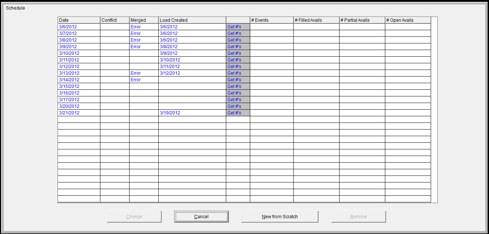
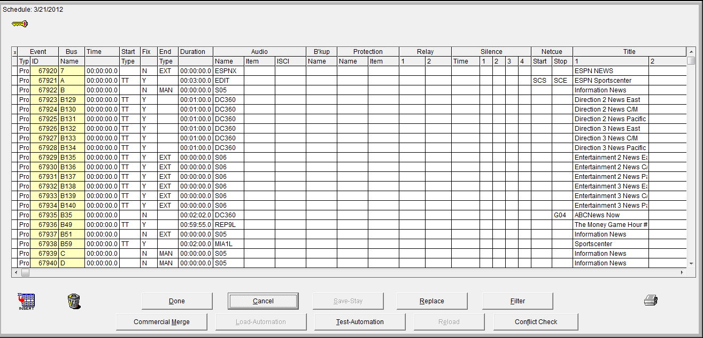
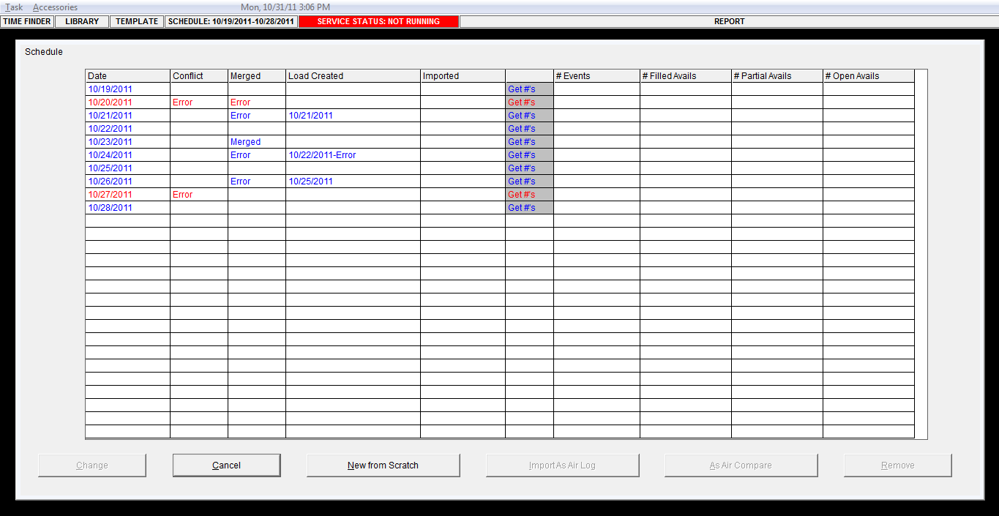
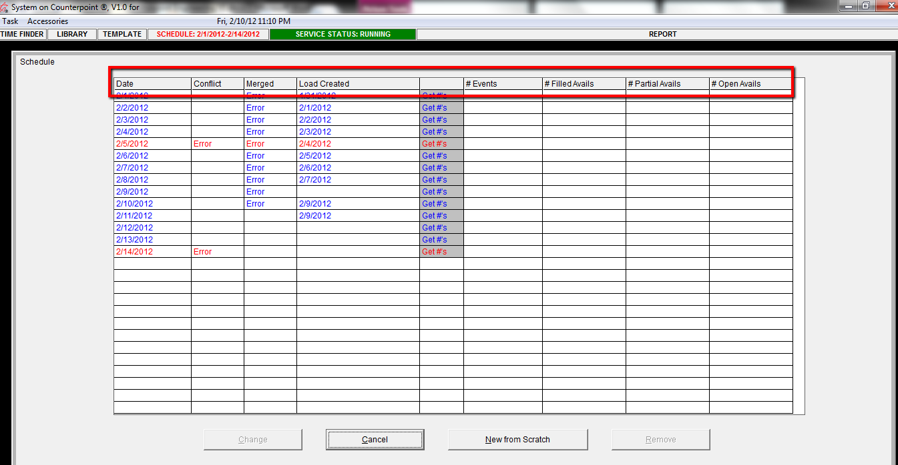
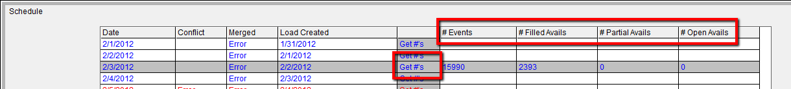
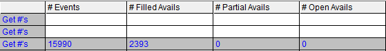
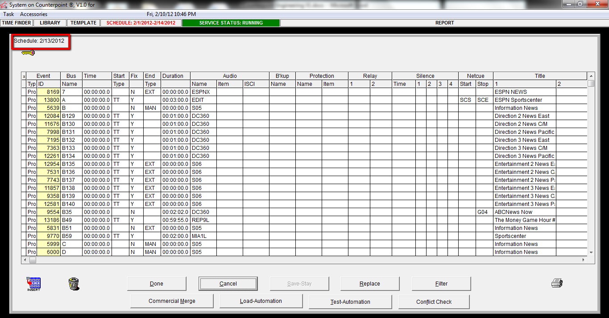

Schedules Screen
Two main screens within the Schedules tab
The Main Schedule screen

The Daily Schedule screen

The Main Schedule Screen

Overview
The main ‘schedule’ screen displays schedules for the past X days (the number of days the Schedules screen retains a daily schedule is defined in the lists screen). You can access daily schedules through this screen to view or to change.
Field Definitions Main Schedule Screen
(the column names at the top of the main schedule screen are defined below):

Date: indicates the date of a daily schedule.
Conflict: indicates if there is an event conflict in the daily schedule. If a conflict exists a conflict check should be manually performed.
Merged: indicates if the daily schedule file has been merged with the Traffic Department’s spots import, (in traffic it is called the NY Export).
Load Created: Indicates that a Load file has been created for the automation system for a specific day.
Easy Access Reports in the Main Schedule Screen:
Get #’s: Clicking this field populates the below fields with the below information:


# Events: this is the total number of events: programs, spots, avails, in the schedule for that day.
# Filled Avails: this is the number of filled avails the NY Export has populated (a filled avail is a spot).
# Partial Avails: this the number of partially filled avails populated by the NY Export. For example if a 60 second avail was populated with only a 30 second spot, it would be a partially filled avail.
# Open Avails: this is the number of avails that where not populated with spots by the NY Export.
The Daily Schedule Screen

Overview
The daily schedule screen is a viewable, editable list of all events that are scheduled to air on a given day. The date is located in the top left corner. A key for color coding meanings is also in the top left corner and can be accessed by holding down your right mouse key.
3 Types of Daily Schedules
Daily Schedule: A Daily Schedule is a schedule which has been created (normally 5 days in advance).
Merged Schedule: A Merged Schedule is a schedule which has been merged with spots from the NYC Export in Traffic.
Loaded Schedule: A loaded schedule is a schedule that has a load file created to be sent to automation. Editing of a loaded schedule is somewhat limited.